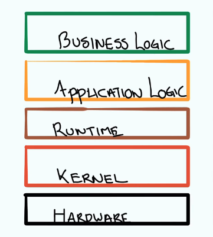
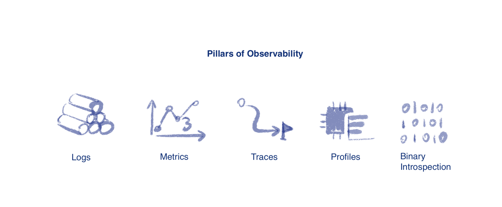
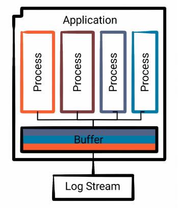
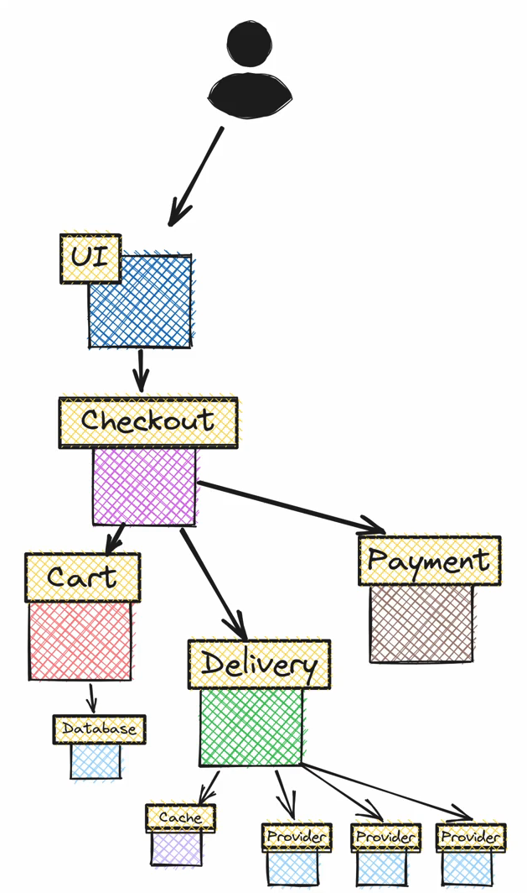
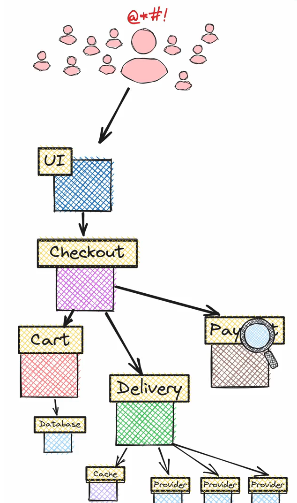
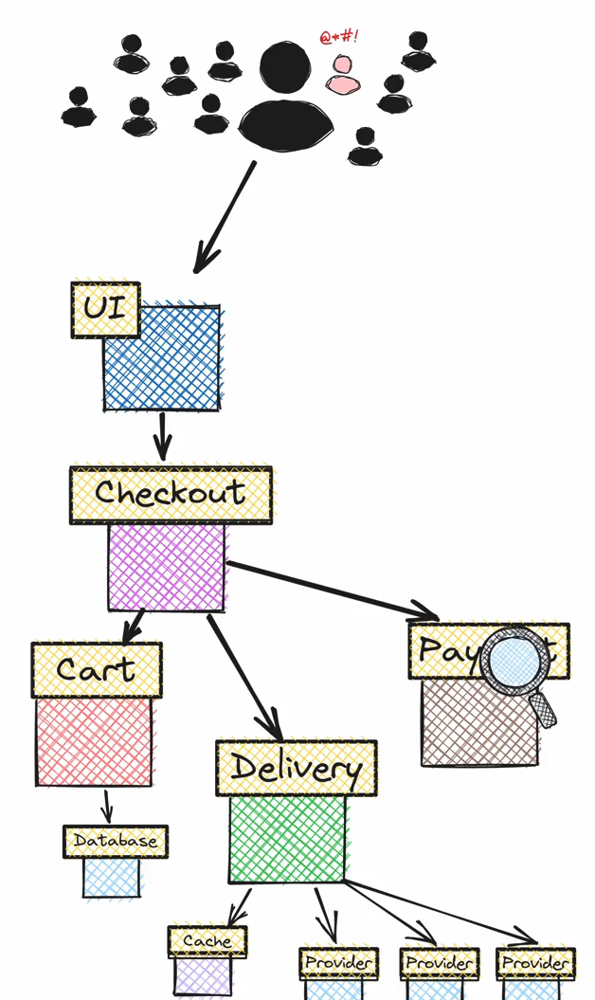
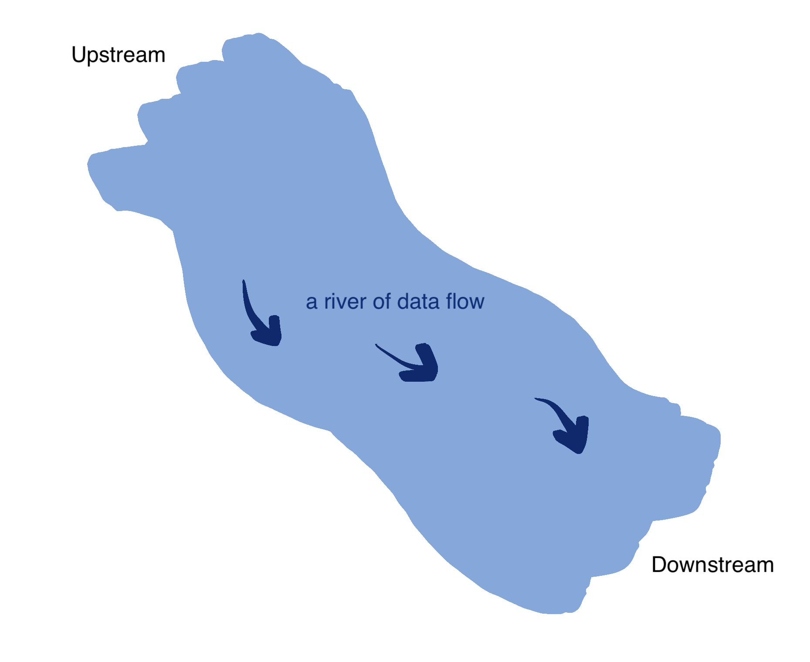

Observability
The goal of observability is to identify/debug the Problem.
Observability
How well you can reason through the software state by using telemetric outputs.
"遥测" (telemetry) refers to the collection and transmission of data from remote sources, while "输出" (outputs) denotes the data that is generated and provided by the system.
Nowaday, Microservice is the trend. However, they also create a much more complex and diverse software architecture - since there are not so much central governance of these systems.
➡️ ➡️ ➡️ The system has become more complex, therefore we need Observability
What are we observing?¶
Taking e-commerce shop as example. When a customer places an order, the system checks if the product is in stock, if the payment method is valid, and whether the customer has provided all necessary information (e.g., shipping address).
- Business Logic: The number of validation failures and the average time taken for validation checks.
- Application Logic: how many HTTP requests
- Runtime: if the App is writen in Go, how much time it spends in Garbage collection
- Kernel: how is the CPU and memory utilization
- Hardware: The temperature of the CPU, or the speed of the fans

Problem Types¶
- Known Known: I send a request to a server and get a 503, I know the app is unavailable.
- Known Unknown: I send a request to a server but it doesnt work, I have the hypothesize that the application is attempting to write to disk, but the disk is full - but we cannot validate this as we have no telemetry on the disk.
- Unknown Unknown: we've validated everything that we can think of. But still couldn't find where the problem is
- Unknown Known: We are sure that the app works, but someons has overridden the DNS record, which points to our service.
Effective Observability¶
A system requires two things in order to be observable:
- The telemetric data: that describe its internal state at some specific time.
- Understanding of the system. E.p. read the code
Pillars of Observability¶

Pillar 1: Logs¶
Three Standard Streams in computer programs: STDIN, STDOUT, STDERR, the STDOUT and STDERR are where the logs are.
Log Components¶
- Trigger Event
- Context: that you want to associate with the Trigger Event
Syslog Severity Levels¶
| Level | Severity | Keyword | Description |
|---|---|---|---|
| 0 | Emergency | emerg | System is unusable |
| 1 | Alert | alert | Action must be taken immediately |
| 2 | Critical | crit | Critical conditions |
| 3 | Error | err | Error conditions |
| 4 | Warning | warning | Warning conditions |
| 5 | Notice | notice | Normal but significant condition |
| 6 | Informational | info | Informational messages |
| 7 | Debug | debug | Debug-level messages |
Log Destination¶
- Standard Stream (
STDERR) - File
- Network Socket
- Pipe
Some log Destination may require a single owner process to coordinates:

However, a process will periodically flush these logs to the final destination, but many things might have written records to that buffer in the meantime.
➡️ ➡️ ➡️ This means that as we're actually consuming the logs, they might be in a wrong order. The 2 sides of Log Stream:
| Advantages | Disadvantages |
|---|---|
| 1. Easy to implement 2. Well supported 3. Arbitrarily complex 4. Useful in production |
1. Expensive 2. Structured |
When to use logs?
For the app that:
- Low traffic
- Single Instance
- Isolated
Log Consumption¶
- in Terminal
Locally in your PC, or if you have the app on Cloud, you can do
kubectl log [Pod Name]to view the logs. Tools likegrep(search tool) andjq(a JSON processor) are also useful for searching info. -
Log Aggregation & Indexing. Advantages:
- These indexes can be handy to establish patterns in the data.
- Beyond that they centralized logs and they can provide this like grep like or jq like functionality
- that's not tied to your local machine and can be much faster to process a really large amounts of material.
Break down
(1) Log Ingestion
Logs from various sources (applications, servers, etc.) are collected using agents (e.g., Filebeat, Fluentd) in JSON format (JSON is suitable for indexing)
(2) Log Indexing{ "timestamp": "2024-10-22T08:00:00Z", "log_level": "ERROR", "message": "Failed to connect to database", "service": "payment-service" }
An index is a data structure that allows quick lookups. For example,Elasticsearchbuilds inverted indexes which map terms
(3) Querying
Once indexed, logs can be queried# QUERY: GET /logs/_search # RESULT: { "query": { "bool": { "must": [ { "match": { "log_level": "ERROR" }}, { "match": { "service": "payment-service" }} ] } } }
Pillar 2: Distributed Tracing¶
Nowaday we have microservices architecture, instead of the monolithic. But microservices is more complex. For instance, imagine a user of an online-shop is trying to order sth:
| Problem: | There is error in the order process, we don't know which microservice caused the error |
The system become extremely slow, when the request increases |
Only certain users have this slow order problem |
|---|---|---|---|
| Illustration: |  |  |  |
History¶
| Year | Approach | Description |
|---|---|---|
| 2010 | Dapper, a large-scale distributed systems tracing infrastructure | by Google, they describe the core challenge, specific designs and the trade-offs they made, and an evaluation of how well it works |
| 2012 | Zipkin | by Twitter, replicated many benefits from Dapper |
| 2015 | T channel, a new RPC protocol | by Uber, one of the protocol goals is the Dapper tracing being part of the format, similar to what Zipkin is doing, but it has limitations of how data is stored |
| 2015 | OpenTracing | It provides turnkey tracing by providing common standards for span management and inter-process propagation. |
| 2017 | Jaeger | by Uber, release it as open-source, and donated to CNCF |
| 2018 | OpenCensus | by Google, This framework went beyond OpenTracing, implementing APIs for metric collection and solving another really critical component of observability need. |
| However, the OpenTracing and OpenCensus projects were now competing projects, both implementing a tracing API, and neither was especially compatible with each other | ||
| 2019 | Open Telemetry | = OpenTracing + OpenCensus, it seeks to provide high quality, ubiquitous and portable transport telemetry to enable effective observability. It contains ALL required technologies to export metrics, logs and traces. Advantages: - support multiple programming languages - vendor-neutral |
Turnkey Tracing
Turnkey表示“开箱即用的”或者“ready to use”): refers to providing an easy, ready-to-use solution for distributed tracing.
Imagine a web request that goes through three services:
Service A (frontend) → Service B (authentication) → Service C (payment processing).
Span Management
跨段管理, is the process of managing individual spans within a trace. Continuing the previous example:
Span 1: Request starts in Service A (frontend).
Span 2: Request is forwarded to Service B (authentication) and processed.
Span 3: Service C (payment) completes the transaction.
Inter-Process Propagation
进程间传播, automatically passes tracing information between services, linking spans into a complete trace.
Trace¶
Traces give us the big picture of what happens when a request is made to an application. Whether your application is a monolith with a single database or a sophisticated mesh of services, traces are essential to understanding the full “path” a request takes in your application.
Tracer¶
A Tracer creates spans containing more information about what is happening for a given operation, such as a request in a service. Tracers are created from Tracer Providers.
Tracer Provider¶
A Tracer Provider is a factory for Tracers. In most applications, a Tracer Provider is initialized once and its lifecycle matches the application’s lifecycle.
Trace Exporters¶
Trace Exporters send traces to a consumer. This consumer can be standard output for debugging and development-time, the OpenTelemetry Collector, or any open source or vendor backend of your choice.
Span¶
A Span represents a single operation unit within a trace. A span can includes another span。It can be represented in JSON:
{
"name": "hello",
"context": {
"trace_id": "5b8aa5a2",
"span_id": "051581bf"
},
"parent_id": null, # 💡 this indicates the parent/child relationship
"start_time": "2022-04-29T18:52:58.114201Z",
"end_time": "2022-04-29T18:52:58.114687Z",
"attributes": {
"http.route": "some_route1",
"net.transport": "IP.TCP",
"net.peer.ip": "172.17.0.1"
},
"events": [
{
"name": "Guten Tag!",
"timestamp": "2022-04-29T18:52:58.114561Z",
"attributes": {
"event_attributes": 1
}
},
{
"name": "",
"message": "OK",
"timestamp": "2021-10-22 16:04:01.209512872 +0000 UTC"
}
],
"status_code": "STATUS_CODE_OK",
"status_message": "",
}
Usually, a span includes the following informations:
- Name
- Parent span ID (empty for root spans)
- Start and End Timestamps
- Span Context: an immutable object on every span that contains
TraceID,SpanID,TraceFlags,TraceState - Attributes: key-value pairs that contain metadata
- Span Events: a structured log message (or annotation) on a Span, such as:
- Span Links: to associate one span with one or more spans, implying a causal relationship.
- Span Status: possible values are
Unset,Error,Ok
! info "Types of Span" They are 5 types of Span:
- `Client`: a synchronous outgoing remote call such as: an outgoing HTTP request or database call. Note that in this context, “synchronous” does not refer to `async/await`, but to the fact that it is not queued for later processing.
- `Server`: a synchronous incoming remote call such as: an incoming HTTP request
- `Internal`: an operation which does not cross a process boundary such as: instrumenting a function call
- `Producer`: the creation of a job which may be asynchronously processed later such as: a remote job such as one inserted into a job queue
- `Consumer`: the processing of a job created by a producer and may start long after the producer span has already ended.
Pillar 3: Metrics¶
A metric is a measurement of a service captured at runtime.
Other Jargons¶
Lots of definitions are found here
Endpoints¶
Endpoints define the API of a service. Every endpoint has a single, automatically discovered type: BATCH, Database, HTTP, MESSAGING, RPC, GraphQL
Inbound Calls = Incoming Calls¶
the requests that your service or application receives from other services or clients.
Antonym: Outbound/Outgoing Calls
Latency¶
Latency is a measure of delay, usually in milliseconds. Endpoint Latency indicates how quickly an endpoint responds to incoming requests.
Service¶
Service can be seen as a logical component that provides a public API.
Stream¶
Upstream vs Downstream
up and down are relative concepts according to the direction of how the data flows
